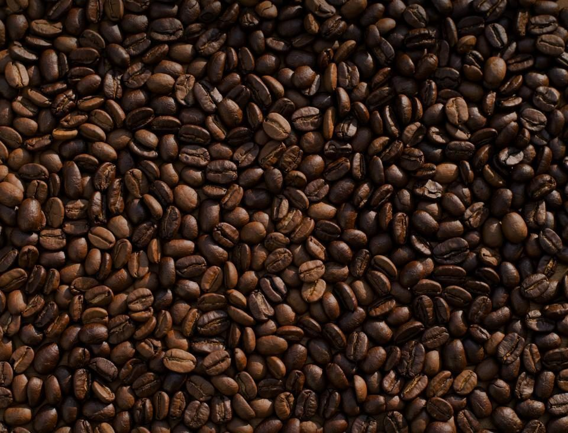

店のこと
店のこと
QUIET静かな
お店について確認できているのは、所在地・電話番号・Instagramのアカウントだけです。
このページの言葉遊びは制作側が考えたもので、お店の実際の様子・考え・商品とは関係がありません。
確認できていること
- 店名は「QUiTTERiE」、業種はパン屋
- 所在地は宮崎県都城市中町13-11(〒885-0071)
- 電話番号は0986-66-8099
- Instagramのアカウントは @quitterie0317
- 営業時間・定休日・メニュー・価格・ご予約・駐車場は準備中
Q と U の連れ札
QUIETは「Q・U」に「IET」が続く5文字です。Qの隣は必ずU。この札は、QとUを1枚にまとめたものです。
QUIET



言葉遊びは制作側の連想で、お店の理念・由来とは無関係です。屋号の意味や読みは断定していません。